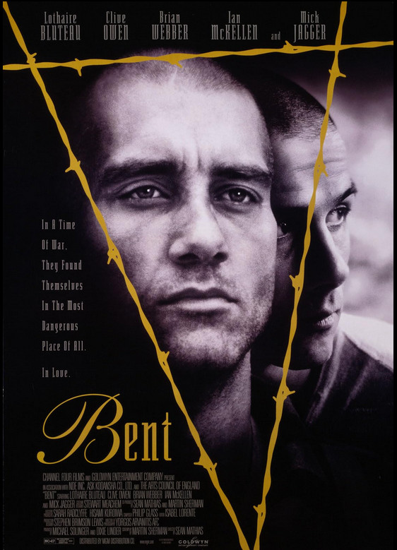

Sean Mathias
1997
108 minutes
TITLE: Bent TEXT PLACEHOLDER 236
This is Bent with a "B", not Rent with an "R". It's not a musical and certainly not very light-hearted. This one is a drag. The main character gets arrested for hanging out with the wrong people (including gay Nazis) and quickly learns he will get at least marginally better treatment for being Jewish than for being queer. So he pretends to be gay and ends up in Dachau. He makes friends with another man who actually was arrested for being gay, and the two of them fall in love of a sorts and end up having a miserable time and coming to a depressing end together. There's a very intense scene where they take a break from carrying rocks back and forth and have a sort of social-distance "talk sex" while taking a break in a pretty intense and erotic and almost comical scene.
You visited Dachau on your first trip to Germany as a teenager with your German class. It seemed depressing and evil and mundane all at once. You remember the sad fact that the town was attempting to rebrand themselves and be known for something besides hosting a concentration camp, but "Ski Dachau" didn't really seem to be catching on as a slogan. You're no longer confident that this will always be the case, considering current events and sentiments.
Time to choose something different: